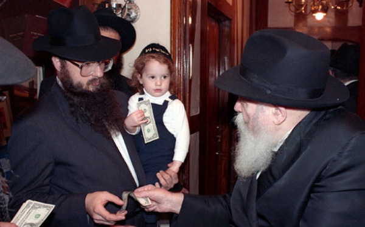

Shliach and the Driving Force of Judaism in Chicago
R’ Daniel Moskowitz, shliach in Chicago, died suddenly of a heart attack following surgery at the age of 59. A brief biography of a Chassid who tirelessly devoted himself to the Rebbe’s shlichus for 37 years.

The Chabad community in Chicago and shluchim and Anash worldwide are mourning the sudden loss of R’ Daniel Moskowitz, shliach in Chicago. He ran the Chabad mosdos there and played a leadership role in the Chicago Rabbinical Council, and because of this, and more, R’ Moskowitz was the driving force of a community with the fourth largest Jewish population in the United States.
R’ Moskowitz was born on the north side of Chicago to Efraim and Tzivia Moskowitz. His father, who was a teacher for many years in a Jewish school in Chicago, learned in Lubavitcher Yeshiva in Brooklyn when he was a boy and maintained his connection with Chabad as a great help to the Rebbe’s shliach in Chicago, R’ Shlomo Zalman Hecht.
In his youth, R’ Daniel attended the Bais Yaakov school in Chicago and then learned in Telz in Chicago. The spirit of Lubavitch which his father had absorbed affected him and he began to take an interest. He then switched to the Chabad yeshiva in Montreal.
After several years in Montreal, he went to learn in 770. He spent his year on shlichus in the yeshiva in Brunoy and merited to receive much from the mashpia, R’ Nissan Nemanov. In 5737, after he married the daughter of R’ Menachem Mendel Aharonov of Toronto, he returned to Illinois where he joined the work of R’ Hecht who was the rav of the Anshei Lubavitch shul.
R’ Hecht, who was an older man at this point, focused on personal outreach and shiurim while much more was needed in a big city like Chicago. At that time, many young Jews had dropped all ties to Judaism and the only Jewish organization that tried to reach out to them was Chabad.
In 5736, a man by the name of Sherwin Pomerantz, today a businessman in Eretz Yisroel, wrote to the Rebbe and asked him to send a Chassid to reach out to the Jewish youth. He received a response a year later. At a meeting in a restaurant, Pomerantz was told that the Rebbe was sending a new shliach to Chicago, R’ Daniel Moskowitz.
About a year after arriving, R’ Daniel established a Chabad house at Northwestern University. One year later, on 24 Av 5739, R’ Hecht passed away and R’ Chadakov told R’ Moskowitz to take over. From a small office in Rogers Park, he turned Chabad of Illinois into an empire with dozens of branches throughout the state.
He started Chabad schools for children of all ages as well as a high school for girls. Chicago became one of the only cities in the US with Chabad schools for all ages.
The dean of Cheider Lubavitch, R’ Yitzchok Wolf, told about the tremendous help he received from R’ Daniel. “He was a role model not just for me but for many shluchim around the world.”
In the 80’s he started Chabad Downtown which serves many Jews who work in the area.
When Jews first immigrated en masse to America, many Chassidim lived in Chicago and there were many Nusach Ari shuls. For various reasons, many of these shuls were closed but in 5755, R’ Moskowitz reopened the Beis Menachem – Nusach Ari shul, thus reviving the old Chassidic shul that had been in Albany Park. For years he also served as the rav of the shul.
In 5760, R’ Moskowitz and his family moved to Northbrook where they started a new Chabad house. It was the last Chabad house that he himself founded. In recent years, he focused primarily on helping found new Chabad houses with the last one opened a few months ago in Carbondale.
R’ Moskowitz was a dynamic shliach and was the force behind the Jewish revolution in the state of Illinois. He helped and supported the founding of about forty new Chabad houses in twenty-one cities around the state and he did it all with joy.
“His leadership style was one of encouragement and enthusiasm,” said R’ Boruch Epstein who replaced him as the rav of the Beis Menachem shul after he moved to the suburbs. “He greatly enjoyed seeing other people doing well, and he was extraordinarily supportive. He oversaw close to 40 institutions. That’s a lot of people, and at any given time, not everybody is always doing well, but he was always encouraging.”
R’ Moskowitz also served as the chairman of the executive committee of the Chicago Rabbinical Council. “R’ Daniel Moskowitz was an individual who had unconditional love for the Jewish people,” said R’ Abramson, administrator of the Beth Din of the CRC. “It came through in all his work, all of his conversations and all of his representations.”
In the course of his wide ranging activities R’ Moskowitz developed connections with important government figures and with many Jewish philanthropists. They all openly displayed great admiration for him. He was friendly with many government figures in Chicago and the state of Illinois and even with senior figures in the federal government. Sherwin Pomerantz, past president of one of the big shuls in Chicago, said that he was deeply influenced by the charisma and authenticity of R’ Moskowitz. To him, R’ Moskowitz was someone completely devoted to his mission, the G-dly mission with which he had been entrusted. Others noted his sense of humor; he always came up with the right joke at the right time.
R’ Moskowitz was known as a dynamic speaker and his shiurim were enjoyed by many, including those who you would not expect to see at a Torah shiur. He was also a gifted writer and his articles on Jewish topics were published in numerous places.
On all these diverse fronts he worked energetically and with endless devotion, becoming one of the central figures in Jewish life in Chicago. Whether he was lighting a Chanuka Menorah at the White House or in the center of Chicago, serving as rav of a shul or as Tankist on a Mitzva Tank, raising money for a new mosad or involved in a din Torah, addressing children in camp or visiting the sick in the hospital and giving them what they needed for Shabbos, R’ Moskowitz was fully devoted.
R’ Moskowitz went to the Rebbe for 11 Nissan 5752, the Rebbe’s 90th birthday. In a short interview that was broadcast on major media outlets, R’ Moskowitz told the tens of thousands of viewers about the Chassidim’s belief that the Rebbe is Moshiach.
***
R’ Moskowitz had gall bladder surgery after which he sent a text to his fellow shluchim with a reminder of a shiur that would be taking place. A few hours later came the shocking news that the shliach had lost consciousness and had passed away of a heart attack.
His sudden death shocked his family, community, fellow shluchim and thousands of Chassidim around the world. He is survived by his parents, three brothers, his wife and nine children. He lived to see four of his children serve as shluchim in Illinois. A future Chabad house that will be built in Chicago will be named for him, said the shluchim, ready to carry on until (Yeshaya 25:8) “And death will be swallowed up forever. And Hashem Elokim will wipe the tears from all faces.”
Beis Moshiach (staff). "Shliach and the Driving Force of Judaism in Chicago." Beis Moshiach, no. 920 (March 20, 2014).